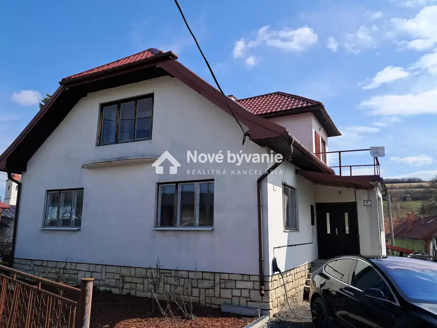
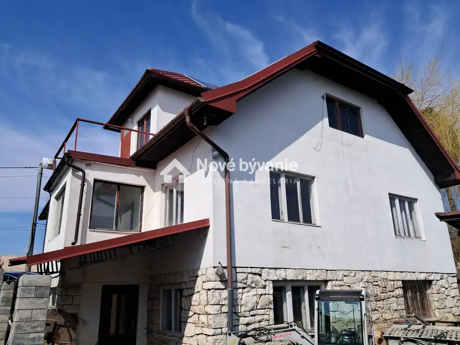
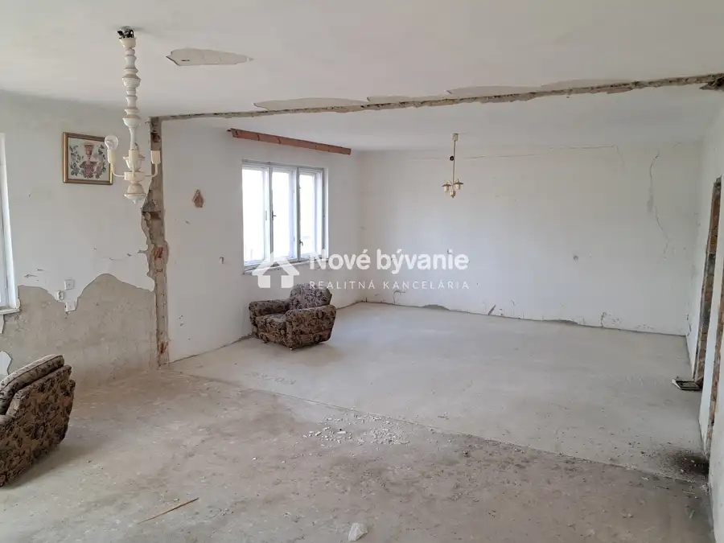
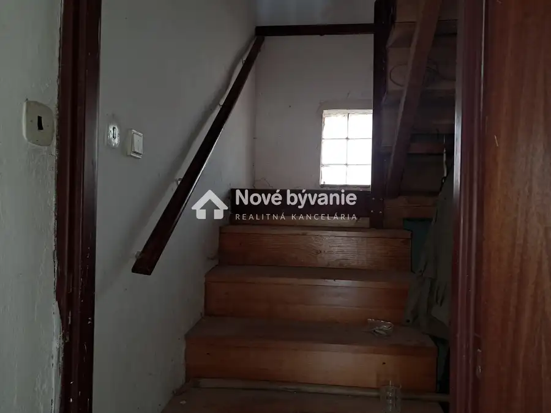
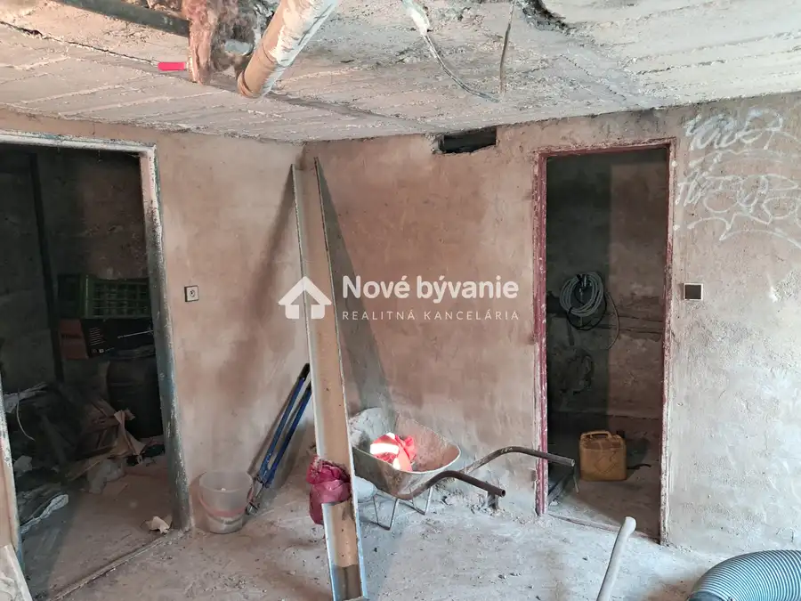

Predaj veľkého rodinného domu s fotovoltikou, obec Arnutovce
Arnutovce





- StavPôvodný stav
- VlastníctvoOsobné
O nehnuteľnosti
N003-12-MAFEPredaj veľkého rodinného domu s fotovoltikou, obec ArnutovceRealitná kancelária Nové bývanie ponúka na predaj veľký rodinný dom v obci Arnutovce. Obec Arnutovce disponuje vynikajúcou polohou - blízkosť národného parku Slovenský raj (3 km), okresného mesta Spišská Nová Ves (5 km) a diaľničného privádzača Spišský Štvrtok (5 km).Dom je v pôvodnom stave okrem novej plechovej krytiny. Súčasťou domu je fotovoltický systém o výkone 10 KW, baterka huawei s kapacitou 14 KW a wallbox s výkonom 22 KW. Dispozícia domu – pivničné priestory, prízemie, 1. poschodie. Dom je svojou veľkosťou pripravený na kompletnú rekonštrukciu podľa predstáv budúceho majiteľa (možnosť dvoch bytových jednotiek). Dom je pripojení na všetky inžinierske siete (elektrina, vodovod, kanalizácia, plynová prípojka na pozemku) a má aj vlastnú studňu.Súčasťou pozemku je aj samostatná budova s klenbovou pivničkou, ktorá môže slúžiť na rôzne účely, podľa preferencií nového majiteľa.Zastavaná plocha domu: 120 m2Zastavaná plocha samostatnej budovy: 65 m2Pozemok: 768 m2Cena:207 900 eur (v prípade seriózneho záujmu dohoda možná)Cena zahŕňa kompletný právny servis a poplatkyPre viac informácií a obhliadku ma neváhajte kontaktovať:+421 940 279 786fendek@novebyvaniereality.sk
Parametre
- Druh
- Rodinný dom
- Dátum zverejnenia
- 03. 04. 2026
- Plocha pozemku
- 0 m²
- Stav nehnuteľnosti
- Pôvodný stav
- Typ
- Predaj
- Vlastníctvo
- Osobné
- Úžitková plocha
- 0 m²